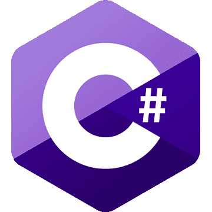
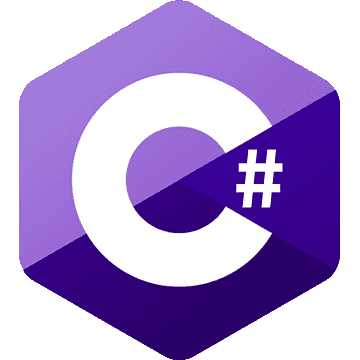

Pour renforcer et améliorer mes comptences, je travail sur divers projets durant mon temps libre. Voici les principaux:
 


Memoris: Recollection est un jeu fantaisique RPG sur lequel je travaille avec un ami depuis Mai 2024. C'était au moment de sa conception notre projet le plus ambitieux et il m'offre des possibilités d'apprendre dans de nombreux domaines, tout en me faisant découvrir de nouvelles compétences au fur et à mesure de son avancement et des nouvelles tâches que nous devons effectuer.
Plus de détails sur Memoris: Recollection
Repositoire GitHub privé, me contacter pour plus d'information.
Minato Aqua Maid App est une application desktop en python qui m'a permis de pratiquer la POO en python et d'explorer les librairies tkinter. Elle consiste en une simple to-do list et un lecteur de son aleatoire.
Plus de détails sur Minato Aqua Maid App
Minato Aqua Maid App sur GitHub
J'aime garder mes fichiers oragnisés, mais je finis souvent avec beaucoup de dossiers, c'est pourquoi j'ai décidé de créer ce script. tp.sh est un script bash qui ouvre l'explorateur apres avoir appelé le script avec des paramètres pré-définis dans le terminal.
tp.sh sur GitHub
clean-downloads.py est un script python que j'ai développé pour pouvoir nettoyer mes fichiers de du dossiers Téléchargements vers un autre dossier. Je préfère garder certains types de fichiers seulement dans mes Téléchargements pour archiver ce que j'ai telechargé alors que j'ai tendance à supprimer le reste plus tard, c'est pourquoi j'ai choisi de faire ce script.
clean-downloads.py sur GitHub
getAllFilesStats.ps1 est un script powershell que j'ai développé en complétion de cleanDownloads.py. Comme je garde souvent les installers dans mon dossier Téléchargements, il a tendance à souvent devenir large, donc pour pouvoir les archiver sans perdre de place, j'ai choisi de faire ce script qui permet d'obtenir les metadata de tous les fichiers de mon dossier Téléchargements et les écrire dans un fichier texte.
getAllFilesStats.ps1 sur GitHub